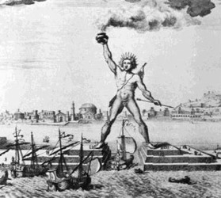

Not like the Brazen Giant of Greek Fame,

Like Abraham of Ur, Emma Lazarus was a smasher of idols. Here she blasts the ancient Colossus of Rhodes, an image of the Titan Helios, as a symbol of military conquest.
In fact, the history of the Colossus is more benign than the sonnet would suggest. Standing over thirty meters tall, it was built between 292 and 280 BCE to celebrate the Rhodians’ defense of their city against Cyprus; weapons abandoned in the siege of Rhodes were both sold and smelted into bronze to build it. Less than 60 years later, it was felled by an earthquake. Observing it in fragments, Pliny the Elder marveled that “few men can get their arms around its thumb.”
In 2008, The Guardian reported that a new colossus is coming to Rhodes; the German artist Gert Hof is designing a light sculpture between 60 and 100 meters tall that will allow ships to pass directly through its beam.
Emma Lazarus had no time for Greek sun-gods. Still in her teens, she wrote long, narrative poems in which Apollo is a sexual predator, terrifying maidens who forfeit their humanity to escape the sun-god's clutches. The panicked Daphne became a laurel; Clytie, a sunflower.
With conquering limbs astride from land to land;
Here at our sea-washed, sunset gates shall stand
A mighty woman with a torch, whose flame
You can click on the highlighted text to reveal more information. Annotations can contain formatted text, images, and even videos.
Rich Media Support
You can wrap text around images easily. This allows for a more visual explanation of concepts without breaking the flow too much.
Videos can also be embedded:
The goal is to provide a seamless reading experience where additional context is available exactly where it's needed.
Contextual Delivery
By placing the information right below the line, we minimize the cognitive load of switching between different parts of the page or opening new tabs.